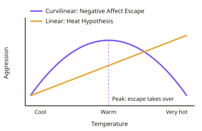

A-level Psychology Year 13 · Topic 8
Environmental psychology
Environmental psychology studies how our surroundings affect our behaviour, and how our behaviour affects the environment.
We will cover stressors like noise, heat and crowding, personal space and territory, and how buildings and towns can be designed.
Then we look at how we form mental maps of places, and how to encourage people to live more sustainably.
- 9 subtopics
- 219 questions
- Free: 8.1 notes and 10 questions
In this topic
- 8.1Environmental stressors: noise and temperatureFree below · 26 questions
- 8.2Crowding: density, perceived control and effects on behaviourOpen in Full Marks · 31 questions
- 8.3Personal space and territorialityOpen in Full Marks · 34 questions
- 8.4Environmental design: architecture, defensible space and the ambient environmentOpen in Full Marks · 28 questions
- 8.5Environmental cognition: cognitive maps and wayfindingOpen in Full Marks · 23 questions
- 8.6Pro-environmental behaviour and sustainability: attitudes, values and barriersOpen in Full Marks · 26 questions
- 8.7Consumer psychology: the physical and psychological shopping environmentOpen in Full Marks · 16 questions
- 8.8Consumer decision-making and the product: choice, heuristics, packaging and pricingOpen in Full Marks · 19 questions
- 8.9Advertising: types, techniques, persuasion and brand awarenessOpen in Full Marks · 16 questions
8.1 · Free notes
Environmental stressors: noise and temperature

Key points
- Environmental stressors are aspects of the physical environment (e.g. noise, temperature) that cause physiological arousal and negative affect. They can impair performance, health and social behaviour.
- Noise is unwanted sound, measured in decibels (dB). The scale is logarithmic: +10 dB is heard as roughly a doubling of loudness. Conversation is about 60 dB, and prolonged exposure above about 85 dB risks hearing damage.
- Glass and Singer (1972) exposed participants to loud bursts of noise. Unpredictable noise caused worse after-effects than predictable noise: less persistence on insoluble puzzles and more proofreading errors.
- In Glass and Singer, perceived control (a button to stop the noise) reduced the after-effects, even though participants rarely used it. This links to learned helplessness.
- Cohen et al. (1973) found children living on the lower, noisier floors of a New York apartment block beside a motorway had poorer reading and auditory discrimination. The design was correlational, so confounds such as family income remain possible.
- Hygge et al. (2002) used a natural experiment at Munich airport's relocation. Noise-related deficits in long-term memory and reading appeared near the new airport and faded near the closed one. Before-and-after testing supports causation, though there was no random allocation.
- Habituation to chronic noise can occur, but it has costs, such as raised blood pressure and reduced attention to relevant cues.
- The heat hypothesis (Anderson) predicts a linear rise in aggression as temperature increases. Kenrick and MacFarlane (1986) found drivers blocked at a green light honked more as the temperature rose.
- The Negative Affect Escape model (Baron and Ransberger, 1978; Bell and Baron) predicts a curvilinear (inverted-U) relationship. Aggression rises with discomfort, then falls when it is so hot that escape replaces aggression. Riot data fitted this pattern. Griffitt (1970) found people in hot rooms liked strangers less.
- Evaluation: crime statistics are correlational and have confounds (more people outdoors in summer). Lab studies lack ecological validity and use short exposure. Individual differences and culture matter. Applications include sound barriers, flight curfews and cooling.
In more detail
- Worked decibels: going from 70 dB to 80 dB is a tenfold increase in intensity, heard as roughly twice as loud. Long exposure above about 85 dB risks hearing damage.
- Bronzaft and McCarthy (1975): pupils in classrooms facing an elevated railway in New York were months behind in reading compared with pupils on the quiet side of the same school.
- Heat and crime: Anderson (1987) found violent crimes in the USA were more common in hotter years and in hotter cities.
- Exam tip: for temperature, contrast the linear heat hypothesis with the curvilinear negative affect escape model, and explain why lab and field results differ.
Practice
Environmental stressors: noise and temperature: 10 questions
Pick an answer to check it, or open the answer for the explanation.
1. In Glass and Singer's (1972) studies, which noise condition produced the poorest tolerance for frustration afterwards?
- Predictable noise with no control
- Unpredictable noise with a stop button
- Unpredictable noise with no control
- Predictable noise with a stop button
Show answer
C: Unpredictable noise with no control. Unpredictable, uncontrollable noise produced the worst after-effects (less persistence on insoluble puzzles, more proofreading errors). Perceived control reduced them.
2. Noise rises from 60 dB to 80 dB. Using the rule that +10 dB is heard as a doubling of loudness, perceived loudness increases by a factor of about...
- 2
- 8
- 20
- 4
Show answer
D: 4. A 20 dB rise is two doublings of 10 dB, so 2 × 2 = 4 times as loud. The decibel scale is logarithmic, not linear.
3. Cohen et al. (1973) found children on lower, noisier floors of a New York block read less well. Why can causation not be firmly concluded?
- Noise levels were not recorded
- Only adults were tested
- Reading was not measured objectively
- It was correlational, so confounds such as family income may explain it
Show answer
D: It was correlational, so confounds such as family income may explain it. The design was correlational: floor level was not randomly allocated. Other variables (income, parental help) could explain the reading differences.
4. According to the Negative Affect Escape model, what happens to aggression as temperature rises to extreme levels?
- It stays constant
- It keeps rising in a straight line
- It rises, then falls as escape becomes dominant
- It falls, then rises
Show answer
C: It rises, then falls as escape becomes dominant. The model predicts an inverted-U: aggression rises with discomfort, then falls when the need to escape the heat outweighs the urge to aggress.
5. Kenrick and MacFarlane (1986) blocked drivers at a green light in Arizona. Which finding supported the heat hypothesis?
- Honking was unrelated to temperature
- Only male drivers honked
- Drivers honked less in hot weather
- Drivers honked more as the temperature rose
Show answer
D: Drivers honked more as the temperature rose. A positive relationship was found: higher temperatures were associated with more horn-honking, consistent with heat increasing aggression.
6. Office workers hear intermittent printer noise. They are given a switch to stop it but rarely use it. According to Glass and Singer, the likely effect is...
- fewer after-effects because of perceived control
- no difference from having no switch
- complete habituation immediately
- worse after-effects because the switch distracts
Show answer
A: fewer after-effects because of perceived control. In Glass and Singer, merely believing noise could be stopped (perceived control) reduced the negative after-effects, even when the option was not used.
7. A city recorded 240 assaults in January (mean 3°C) and 300 in July (mean 24°C). What is the percentage increase from January to July?
- 20%
- 60%
- 80%
- 25%
Show answer
D: 25%. Increase = 60. 60 ÷ 240 × 100 = 25%. Using 300 as the base would wrongly give 20%.
8. Which is the best criticism of using city crime statistics to support the heat hypothesis?
- Heat has no effect on mood
- Statistics cannot show correlations
- Other variables, such as more people outdoors in summer, may explain the rise
- Crime data are always fabricated
Show answer
C: Other variables, such as more people outdoors in summer, may explain the rise. Crime data are correlational. Summer brings more social contact and opportunity, so these confounds may account for the increase rather than heat itself.
9. Why is Hygge et al.'s (2002) Munich airport study a strong test of noise effects on children?
- It tested only adults
- It measured children before and after the airports changed
- It used random allocation to schools
- It was a laboratory experiment
Show answer
B: It measured children before and after the airports changed. This natural experiment compared children before and after the airport move. Noise-related deficits appeared and disappeared with the noise, supporting a causal link.
10. Which statement about the heat hypothesis and the Negative Affect Escape model is correct?
- Heat hypothesis predicts a linear rise; the NAE model predicts a curvilinear one
- Both predict aggression falls steadily as it gets hotter
- The NAE model predicts a linear rise; the heat hypothesis a curvilinear one
- Neither involves negative feelings
Show answer
A: Heat hypothesis predicts a linear rise; the NAE model predicts a curvilinear one. Anderson's heat hypothesis predicts aggression increases linearly with heat. The NAE model predicts an inverted-U because very high heat prompts escape.
Keep going in Full Marks
Full Marks has 26 questions on Environmental stressors: noise and temperature (16 more than here), set out in practice levels. You also get notes and 3D models for all 9 subtopics of Environmental psychology, plus games, timed exams and past papers.
On your exam board
Not in the AQA and Edexcel specifications.